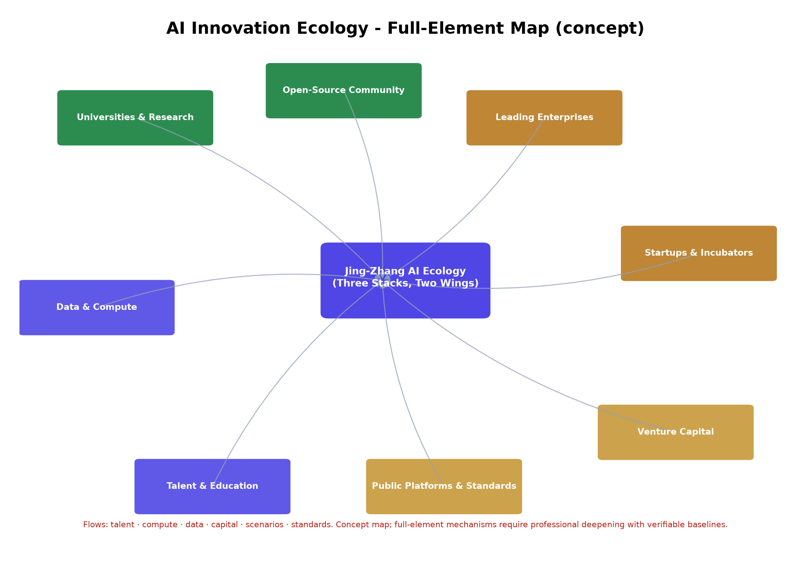
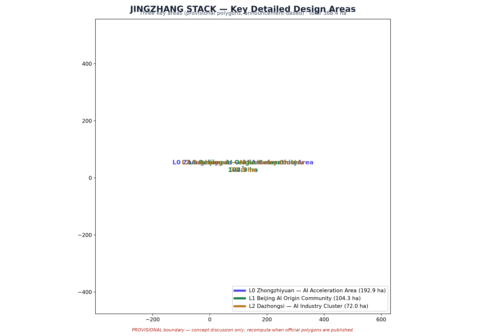
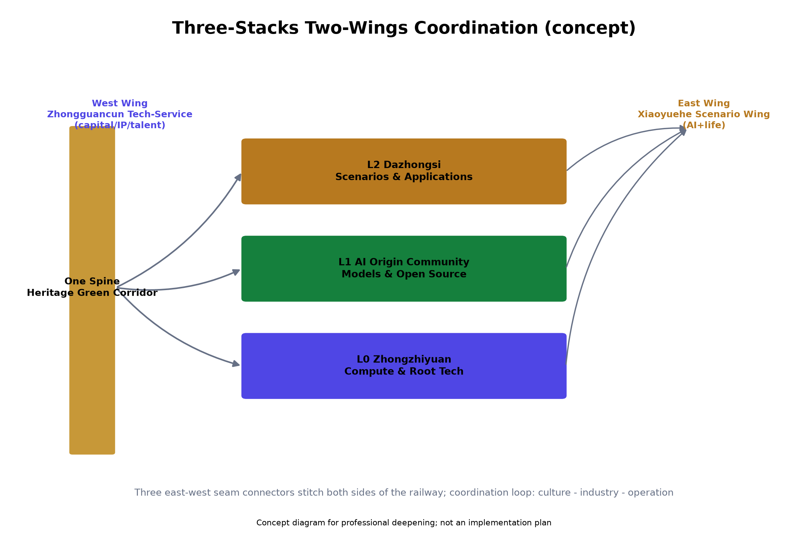
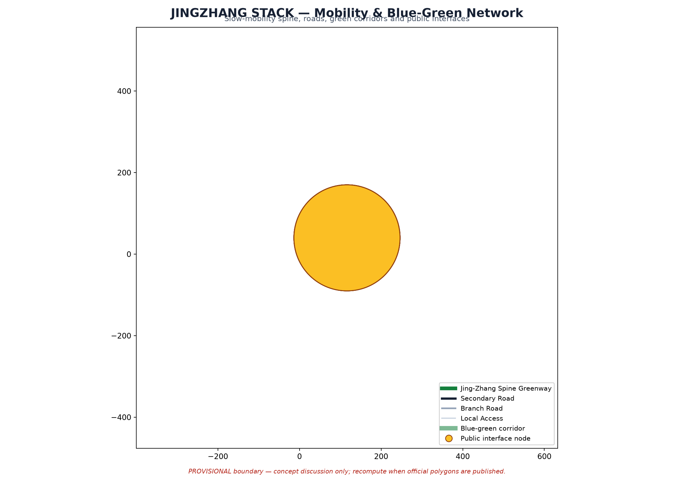

JINGZHANG STACK: One Spine · Three Stacks · Two Wings — Centennial Jing-Zhang AI Innovation Belt Urban Design Concept
English counterpart of the Chinese formal proposal. All spatial conclusions are evidence-linked to GeoJSON layers and recomputed metrics; boundary precision remains provisional until official redlines are published.
JINGZHANG STACK: One Spine · Three Stacks · Two Wings
This is the English counterpart of the formal Chinese proposal proposal.md. It is a substantially equivalent translation: chapters, claims, metrics, evidence references and figure positions follow the Chinese original. Authoritative machine-readable evidence remains in the GeoJSON layers, metrics.json, the compliance/standard/depth matrices and the self-check result.
Design Basis and Source Registry
The formal proposal takes the "Preliminary Qualification Announcement of the International Open Call for Urban Design of the Centennial Jing-Zhang AI Innovation Belt" (Haidian Branch, Beijing Municipal Commission of Planning and Natural Resources) as its primary basis 来源 来源. It also uses the machine-readable brief package under brief/site-package/ (provisional rough boundary, key areas, enumerations, metrics and source registry). All design judgements are decomposed into traceable sources, recomputable metrics, verifiable layers and human-reviewable assumptions 深度. Because the organizer has not yet published official redlines, the package uses a provisional boundary (official_boundary=false, 来源) and must be recomputed once official polygons are published.
Three-Level Scope Framework
| Level | Design Question | Proposal Answer | Data Anchors |
|---|---|---|---|
| Coordinated research scope (43.6 km²) | How to organize the AI industry ecology and future urban form | Innovation chain: university strategy → open-source collaboration → enterprise incubation → public experience → international outreach; regional coordination with Haidian North, Future Science City, Huairou, E-Town and the Beijing-Tianjin-Hebei region | compliance_matrix.json, standard_matrix.json |
| Overall design scope (11.4 km²) | How to implement land use, urban renewal, mobility and image | Land use / buildings / roads / green space / public space / phasing layers; heritage park vitality belt | land_use.geojson, roads.geojson |
| Key detailed design areas (368.4 ha) | How to reach detailed design depth in three areas | L0 Zhongzhiyuan (compute & root tech), L1 AI Origin community (models & open source), L2 Dazhongsi (scenarios & applications) | key_areas.geojson |
Coordinated Research Scope: Industry and Future City Research
The core task is building a world-class AI innovation ecology. The proposal organizes the AI innovation chain, industry chain, talent chain and city-service chain into a spatial coordination framework, serving the integrated identity of "Centennial Jing-Zhang culture belt · urban AI life experience belt · AI-integrated innovation belt" 来源 标准. Coordination research adds no pseudo-precise redlines; it organizes urban character, public space and building layout through the urban-design measures required by 标准, anchored to 空间数据, 空间数据 and 深度.
Global AI Innovation Ecology Benchmarks (6 cases)
Six global cases are used for benchmarking only (no official conclusion claimed; sources registered in sources.json as SRC-CASE-*):
| Case | City | Core Mechanism | Implication for Jing-Zhang |
|---|---|---|---|
| one-north | Singapore | Government-led research-industry-talent integration with a slow-mobility green network | Organization model for the L0 Zhongzhiyuan compute & root-tech stack |
| Digital Media City | Seoul | Digital-content urban renewal district + festival operations (intl. content festival) | Activity/global-communication pathway for the L2 Dazhongsi scenario stack |
| Kendall Square | Boston | MIT-driven university-industry symbiosis (lab-incubator-VC-public services) | University-adjacent commercialization for the L1 AI Origin Community |
| King's Cross | London | Railway-heritage renewal + knowledge-economy clustering + public-space operation | Heritage-innovation-public-space renewal logic for the spine green corridor |
| Hangzhou Future Sci-Tech City | Hangzhou | Low-cost startup space + open scenarios + mass-entrepreneurship events | Operating mechanisms for edge-compute stations and startup service networks |
| Nanshan High-Tech Park | Shenzhen | Leading-enterprise/SME/public-platform dense symbiosis | Industry-service complex and agent-based new businesses |
Benchmark conclusion (concept): the belt should build a perceptible three-layer synergy between "railway-heritage culture belt" and "Zhongguancun innovation source" — culture narrative (One Spine), industry organization (Three Stacks), operation and events (Two Wings and the activity week).
Regional Coordination (concept)
The belt acts as an organic node of the Beijing innovation corridor ("one corridor, multiple nodes"): Haidian North (R&D/high-tech agglomeration, direct interface at the north end — compute/root-tech relay); Future Science City, Changping (AI safety governance and standard sandbox co-building); Huairou Science City (large-science-facility cross-research, compute stations and data-element interfaces); Beijing E-Town (intelligent-vehicle and manufacturing scenario synergy with the slow-mobility testing experience); and the Beijing-Tianjin-Hebei region (innovation activities, scenario opening and talent flows along the Jing-Zhang cultural belt). All mechanisms are concept proposals for professional deepening.

Overall Design Scope: Urban Renewal and Regulatory-Depth Urban Design
The overall scope (11.4 km²) organizes urban renewal, land-use structure, mobility and municipal works around the Jing-Zhang heritage park vitality belt, achieving regulatory-depth urban-design quality. Land use follows the national land-use classification guide 标准; building height/massing/character are governed by 深度 and retain/renovate/demolish by 深度, with main evidence 空间数据, 空间数据 and 指标. FAR, height, density and setbacks remain unknown where official controls are missing; no fabricated precision is introduced.
Key Detailed Design Areas
Three key areas reach detailed-design depth (provisional polygons, announcement-based; areas recomputed in EPSG:4548):
- L0 Zhongzhiyuan — AI Acceleration Area (192.9 ha): compute and root-technology stack; garden-style self-innovation district emphasizing national platforms, industrial showcase, Qinghe culture, external transport and low-carbon exchange spaces.
- L1 Beijing AI Origin Community (104.3 ha): models and open-source stack; university-adjacent commercialization district emphasizing campus-origin innovation, open-source community, talent services, retain-redevelop-demolish strategy and station integration.
- L2 Dazhongsi — AI Industry Cluster (72.0 ha): scenarios and applications stack; urban smart-economy district emphasizing leading enterprises, agent-based new business, commercial services, compound green-space use and four-quadrant junction connectivity.
Each key area states its industrial positioning, spatial strategy, building and public-space moves, transport interfaces and implementation risks.


AI Innovation Ecology, Personas and AI+ Scenarios
Six persona classes are defined (open-source developers, startups, enterprise visitors, residents, university staff/students, international talents) with needs, spatial responses and self-check boundaries, e.g. no personal trajectory collection, no resident profiling for commercial recommendation, campus/research data requiring authorization.
Scenario Card Specs (12 cards)
Each of the 12 cards is specified as an operable spec — spatial carrier with GeoJSON reference, data source, privacy boundary, human review, operating entity, failure degradation, phase and suggested KPI (concept targets only). Cards:
01 Open-Source Release Hall (PROV-KEY-002 / PUBLIC-005) · 02 Safety Governance Sandbox (PROV-KEY-001 / PUBLIC-004) · 03 Edge Compute Station (PUBLIC-001 / ROAD-001) · 04 AI Slow-Mobility Navigation (ROAD-001 / GREEN-001) · 05 Dazhongsi International Roadshow Lounge (PROV-KEY-003 / PUBLIC-006) · 06 Qinghe Low-Carbon Innovation Corridor (GREEN-002 / PUBLIC-004) · 07 University-Neighboring Commercialization Street (PROV-KEY-002 / BLDG-007) · 08 Data-Element Lounge (PROV-KEY-003 / BLDG-016) · 09 AI Life-Service Model Street (PUBLIC-003 / ROAD-005) · 10 Global AI Week Route (ROAD-001 / GREEN-001) · 11 Intelligent O&M & Public-Safety Coordination Desk (PUBLIC-001 / ROAD-003) · 12 Accessible Care Service Network (ROAD-006 / PUBLIC-002).
Governance principle: data minimization, public sources, explainability and human review. City agents may assist gap/hotspot/risk identification but never replace statutory approval, never output unauthorized personal profiles, and never claim official implementation commitments.
Industry Test & Verification Scenarios (4)
T-01 AI slow-mobility & traffic testing corridor (ROAD-001): ≥90-day testing, recognition accuracy ≥90%, false-alarm ≤5%. T-02 City-agent service sandbox (PUBLIC-004): red-team reports, risk closure ≥95%, quarterly reviews. T-03 Low-carbon compute & public-service integration (PUBLIC-001): edge-task share ≥70%, availability ≥99.5%, ≥6-month pilot. T-04 Accessible care pilot (ROAD-006): coverage 100%, satisfaction ≥90%, ≥6-month pilot. All with data boundaries and acceptance criteria.
Honor Showcase System (concept)
Open-source contribution wall (PUBLIC-005), milestone steles along the heritage corridor (echoing Jing-Zhang railway heritage), scenario-landing honor board (PUBLIC-006), and annual developer honors; all subject to data minimization, human review and rights clearance.
Land Use, Building Scale and Retain/Renovate/Demolish
The land-use scheme forms a complete, closed, seamless zoning set (60 polygons, gap=0, overlap=0, 100% coverage) classified per 标准. Buildings are conceptual footprints (20, 214,843 m²) for morphology and metric discussion only — not an exhaustive building census of the 11.4 km² scope; official controls, ownership and engineering conditions remain pending in assumptions. Where FAR, height, density, setbacks or building-control lines lack official conditions, they are listed as unknown/pending rather than filled with fabricated values.
Mobility, Rail, Municipal Works and Public Services
The proposal responds to station integration (Wudaokou, Qinghua East Road West, Dazhongsi), road micro-circulation, slow-mobility gaps, external transport, parking and green-transport requirements 深度 深度, anchored to 空间数据, 空间数据 and 空间数据. With provisional boundaries, transport conclusions are temporary design discussion only. Municipal services cover AI-industry services, innovation platforms, talent life services, new infrastructure, distributed energy, edge compute and conventional facilities; missing pipelines/energy/drainage/fire/engineering data are prerequisites for formal deepening.

Blue-Green Space, Public Space and Urban Character
The blue-green scheme is organized around the Jing-Zhang heritage park vitality belt (GREEN-001) plus the Xiaoyuehe branch (GREEN-002), proposing north-south-through, east-west-connected walking/cycling systems with slow-mobility gap identification and overpass nodes. Public space: 6 nodes (PUBLIC-001~006) including three seam connectors, Zhongzhiyuan compute plaza, AI-origin release space and Dazhongsi roadshow venue; green ratio 26.18%, public-space ratio 8.23% (recomputed, provisional).
Public-Space Component Library (concept)
Six modular component families: rest seating & shading; smart bilingual wayfinding (incl. accessible tactile); low-carbon infrastructure (distributed energy, stormwater, ecological tree pits integrated with edge-compute stations); test & experience venues (bookable sandbox/slow-mobility/roadshow); accessibility package (wheelchair ramps, voice guide, accessible charging, linked to the care network); cultural identity nodes (railway-heritage and AI-culture symbols).
Cultural Wayfinding System (concept)
Three-level wayfinding (regional / district / node), bilingual and accessible (tactile, voice, wheelchair-friendly) per 来源 baseline, unified cultural symbol system derived from "One Spine · Three Stacks · Two Wings" (requires clearance), and an offline updatable content mechanism managed by park operations.
Renewal Project List, Implementation Policy and Phasing
Six concept renewal projects (JZ-01~JZ-06) are listed by type and dependency, with three phases in phasing.geojson: Phase 1 near-term (Origin community + heritage spine), Phase 2 mid-term (Zhongzhiyuan compute cluster), Phase 3 far-term (Dazhongsi scenarios + two wings). FAR, height and other unknown controls are preserved as unknown. Lightweight pilot: JZ-01 Heritage-Park Slow-Mobility Gap Stitching (concept). Objective: stitch slow-mobility gaps along the heritage park with low disturbance and validate the minimal viable loop of AI slow-mobility navigation (Card 04) and the intelligent O&M coordination desk (Card 11). Suggested steps: (1) public data plus field survey to form a prioritized gap list anchored to 空间数据; (2) stitch 2-3 high-priority gaps first with temporary facilities (signage, lighting, accessible ramp modules); (3) deploy low-intrusion sensing and explainable wayfinding, monitoring for >=90 consecutive days; (4) evaluate against acceptance criteria (recognition accuracy >=90%, false-alarm <=5%, satisfaction >=85%); (5) if passed, incorporate into the formal renewal project library. Suggested responsible actors: park operator leads, with transport/accessibility specialists and community representatives in review (concept). Suggested timeline: initiation 0-3 months, facility deployment 3-6, monitoring 6-9, formal conversion 9-12. Start conditions: road redline, under-bridge space and traffic organization review completed; may proceed without official redlines (concept). Risk & exit: if monitoring targets are not met, revert temporary facilities and adjust the plan, reviewed by the operations committee. Concept proposal only, subject to formal conditions and approvals.
Annual Activities and Long-Term Operation Pathway (concept)
Annual calendar framework (spring open-source developer festival at the Origin community; summer scenario open days & testing season at the sandbox; autumn international roadshow week at Dazhongsi; winter results & honors gala along the Global AI Week route). Operation pathway: events import users/demand → scenario cards become bookable services → test scenarios accumulate data/standards → mature scenarios convert to regular operation → periodic evaluation. Evaluation & exit: annual suggested KPIs; scenarios failing two consecutive cycles enter optimization/exit reviewed by an operations committee; public-fund usage follows compliance procedures. Operation funding concept: public-service input + scenario operating revenue + incubation service income. All concept proposals, no government commitments.
Indicator System, Area Recalculation and Compliance Matrix
All metrics are recomputed from submitted geometry (EPSG:4548); see metrics.json for 21 metrics with formulas, confidence and provisional notes. A global precision_declaration states that provisional-derived metrics are concept-level only and must be recomputed after official polygons are published; count-type metrics (scenario cards, personas, landmarks, seams) retain high confidence. Task coverage: compliance_matrix.json covers announcement items 1.3-1.5 and agent.1-agent.6 (all complete); standard_matrix.json substantiates professional standards; design_depth_matrix.json substantiates deliverable depth.
Risk, Copyright and Compliance
The package repeatedly discloses provisional boundaries (every figure, PDF page and HTML section), writes all spatial/activity/operation/policy proposals as concept suggestions, never fabricates official endorsements, approvals or controls, and applies data-minimization and human-review principles. sources.json registers 17 sources with authority level, access date and allowed/prohibited uses (SRC-ELDERLY-SMART-TECH is background_only). assumptions.json records pending controls (regulatory plans, road redlines, ownership, municipal, heritage, engineering). Asset-level provenance and license (COMMUNITY-DISPLAY-ONLY) are detailed in report/copyright_statement.md.
References
See sources.json for the full registry: official announcement, agent task book, MNR land-use classification, MOHURD urban-design measures, generative-AI measures, barrier-free environment law, elderly smart-tech plan (background_only), provisional-boundary source, site package, source registry, peer proposals (not for formal) and six global benchmark cases (SRC-CASE-*).